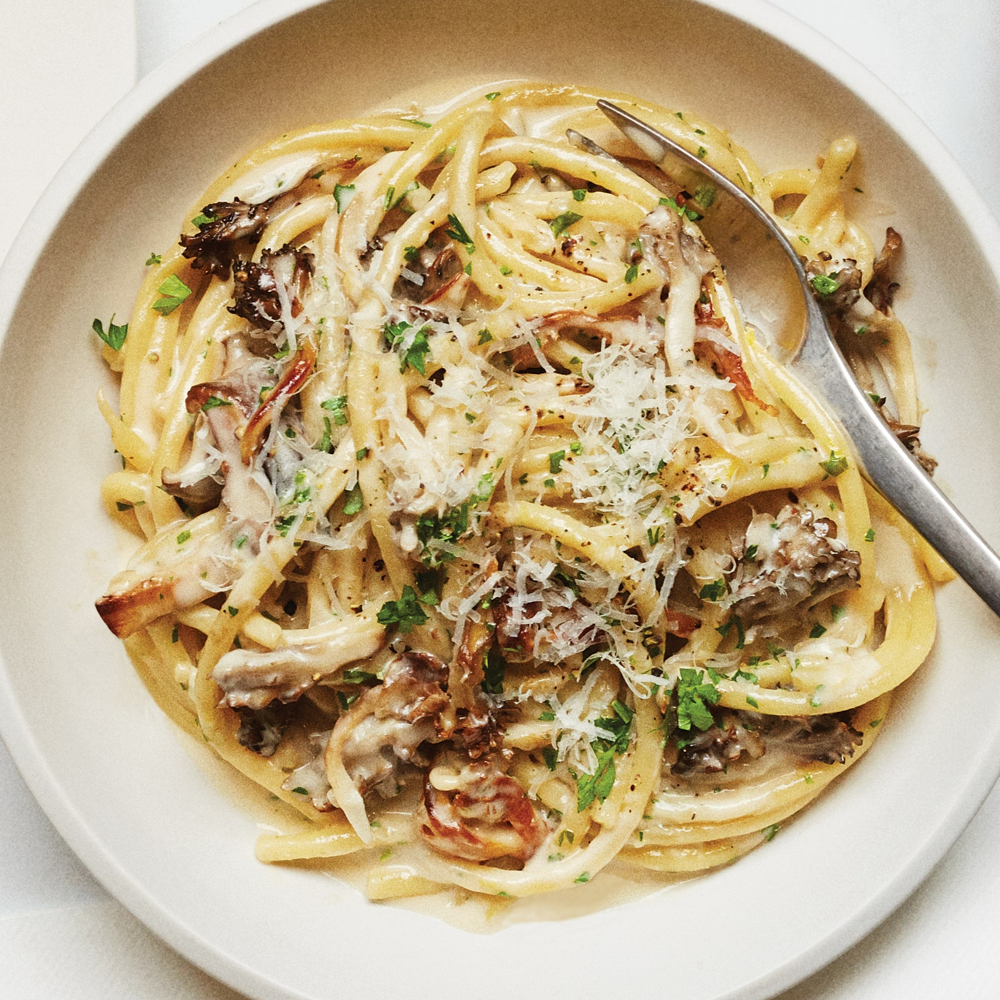

Mushroom Pasta

Description
Mushrooms give any food a hard kick of flavor of the unami
type. If you don't think that you like mushrooms... wait till you
try this pasta!
This recipe is from
Bon Appetit
Ingredients
- 4 Tbsp. olive oil
- 1 lb. mixed mushrooms, torn into bite-size pieces
- 2 medium shallots, finely chopped
- 1 lb. spaghetti or similar
- ½ cup finely chopped parsley
- Zest and juice of ½ lemon
- 2 Tbsp. unsalted butter, cut into pieces
- ½ oz. Parmesan, finely grated (about ½ cup), plus more for serving
- Ground black pepper
Steps
- Heat 2 Tbsp. oil in a large pot over medium-high. Cook half of
the mushrooms in a single layer, undisturbed, until edges are brown
and starting to crisp, about 3 minutes. Give mushrooms a toss and
continue to cook, tossing occasionally, until all sides are brown
and crisp, about 5 minutes more. Using a slotted spoon, transfer
mushrooms to a plate; season with salt. Repeat with remaining 2 Tbsp.
oil and mushrooms and more salt.
- Reduce heat to medium-low and return all of the mushrooms to the pot.
Add the shallots and cook, stirring often, until they are translucent
and softened, about 2 minutes.
- Meanwhile, cook the pasta in a large pot of boiling salted water,
stirring occasionally, until al dente, about 2 minutes less
than the package directions.
- Using tongs, transfer pasta to pot with mushrooms and add cream and
1 cup pasta cooking liquid. Increase heat to medium, bring to a
simmer, and cook, tossing constantly, until pasta is al dente and
liquid is slightly thickened, about 3 minutes.
- Remove pot from heat. Add lemon zest and juice, parsley, butter,
½ oz. Parmesan, and lots of pepper and toss to combine. Taste and
season with more salt if needed.
- Divide pasta among bowls and top with more Parmesan.